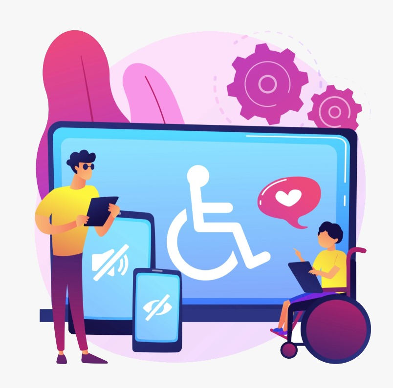

Acessibilidade

O que é acessibilidade?
De acordo com uma definição do Governo Federal, acessibilidade significa incluir pessoas com deficiência na participação de diferentes atividades como o uso de produtos, serviços e informações. Mas a acessibilidade vai além disso. Além de promover a independência de pessoas com deficiência, a acessibilidade beneficia muita gente. Quer saber como?
Se estamos carregando uma mala pesada e ao invés de usar as escadas usamos a rampa, isso é acessibilidade. Se assistimos um vídeo e estamos impossibilitados de ouví-lo com áudio, seja por alguma questão técnica ou por estar no transporte público sem fones de ouvido, e ele possui legendas, isso também é acessibilidade.
Quais são os tipos de acessibilidade?
Já demos alguns exemplos simples de acessibilidade, mas agora vamos falar sobre os tipos que existem e o que cada um deles significa.
1. Acessibilidade atitudinal:
Acessibilidade atitudinal diz respeito às ações que tomamos como indivíduos para diminuir as barreiras entre as pessoas com deficiência e sem deficiência. É se colocar minimamente no lugar do outro, pensar e realizar ações que promovam um mundo mais justo e inclusivo para todas as pessoas.
2. Acessibilidade arquitetônica:
A acessibilidade arquitetônica está relacionada aos recursos que permitam a locomoção de pessoas com deficiência física ou mobilidade reduzida, em qualquer espaço com autonomia.
3. Acessibilidade metodológica:
A acessibilidade metodológica também conhecida como acessibilidade pedagógica envolve a diversificação de metodologias e técnicas para viabilizar total acesso de pessoas com deficiência à educação.
4. Acessibilidade programática:
A acessibilidade programática está justamente ligada à sensibilização, conscientização e aplicação dessas normas, decretos, regulamentações, leis e políticas públicas que respeitam as necessidades das pessoas com deficiência.
5. Acessibilidade instrumental:
O objetivo da acessibilidade instrumental é superar barreiras no uso de utensílios e ferramentas que são necessárias no desenvolvimento de atividades escolares, profissionais, de recreação e até mesmo de lazer.
6. Acessibilidade nos transportes:
A acessibilidade nos transportes não diz respeito apenas aos assentos preferenciais nos meios de transporte, mas em todo o processo que a pessoa realiza para fazer a sua viagem.
7. Acessibilidade nas comunicações:
Tornar as comunicações de fácil entendimento para o maior número de pessoas possível é o objetivo desse tipo de acessibilidade.
8. Acessibilidade digital:
Por conta do avanço acelerado da tecnologia e da presença cada vez maior das pessoas nas redes sociais, que transformou a forma como nos relacionamos atualmente, a acessibilidade digital é um dos tipos de acessibilidade mais discutidos e exigidos nos últimos anos. Ainda assim, pesquisas revelam que menos de 1% dos sites está acessível para pessoas com deficiência.
9. Acessibilidade natural:
A acessibilidade natural tem como missão quebrar barreiras que a própria natureza produz.
Quais os exemplos de acessibilidade?:
Explicamos os diferentes tipos de acessibilidade e até contamos algumas situações em que esses tipos de acessibilidade acontecem, mas listamos aqui algumas ferramentas bem comuns.
Audiodescrição:
Essa é uma solução muito utilizada por pessoas com deficiência visual para entender o contexto de um conteúdo que está sendo exibido. Seja na televisão, vídeos da internet ou em eventos presenciais, os audiodescritores – profissionais especializados nessa área – passam através de suas vozes o que está acontecendo em determinado cenário.
Audiolivros:
Conhecidos também como audiobooks, essa solução nada mais é que a gravação de conteúdos de livros de forma narrada em voz alta dentro de um estúdio ou em um ambiente que possua equipamentos para essa finalidade.
Elevador:
Com a missão de garantir uma locomoção mais eficiente, tornando os locais mais funcionais e proporcionando o direito de ir e vir de forma plena, os elevadores têm um grande papel na inclusão social. Por meio deles, pessoas com deficiência física possuem mais autonomia e qualidade de vida, podendo circular em diferentes pavimentos e usufruir de espaços como os demais usuários.
Legendas closed caption:
Resumindo de forma simples, as legendas ou closed captions (CC) são a tradução em texto da fala de personagens que estão em um conteúdo audiovisual. Elas são um dos recursos de acessibilidade mais universal que existem. Isso porque beneficiam tanto pessoas surdas ou com deficiência auditiva que dependem desta ferramenta para entender conteúdos que contenham áudio, como pessoas sem deficiência em diferentes cenários.
Leitor de tela e ampliador de texto:
Os leitores de tela são ferramentas que capturam informações apresentadas em forma de texto e transformam em uma resposta de áudio por meio de sintetizadores de voz. Eles fazem uma varredura e buscam essas informações que podem ser lidas para o usuário, possibilitando a navegação por menus, janelas e textos. Imprescindível para pessoas cegas e com diferentes deficiências visuais, hoje é possível encontrar esse recurso nativo em diferentes modelos de smartphones.
Libras:
Segundo a Federação Mundial dos Surdos, 80% das pessoas surdas no mundo não são fluentes nas línguas escritas e dependem das Línguas de Sinais para obter informação. Essa é a figura que também encontramos aqui no Brasil. A Libras é a língua materna da maioria das pessoas surdas. Além de ser uma forma de comunicação é muitas vezes uma expressão cultural, uma identidade dessas pessoas. A Libras é reconhecida como idioma em nosso país desde 2002 por meio da Lei nº 10.436.
Linha Braille:
Para pessoas surdocegas, a Linha Braille ou Display Braille é a única maneira de ter acesso a dispositivos móveis ou computadores para navegar na internet e se comunicar, mas existem pessoas com outras deficiências visuais que também podem usufruir de um aparelho como esse. A Linha Braille é uma espécie de mistura entre computador e máquina braille, que é capaz de converter instantaneamente, com pontos em alto relevo, textos ou dados de telas de tablets, computadores e celulares.
Piso tátil:
Esse piso pode não fazer muita diferença para pessoas videntes, mas para pessoas com deficiência visual e baixa visão ele representa independência na locomoção. Piso tátil, piso podotátil, superfície tátil ou pavimento tátil são faixas com relevos aplicadas no chão que auxiliam na locomoção e compreensão de onde se está circulando.
Rampas de acesso:
As rampas de acesso são adaptações em locais públicos e privados que auxiliam na circulação de pessoas que utilizam cadeiras de rodas, possuem mobilidade reduzida ou qualquer questão física que as impossibilitem de subirem escadas, por exemplo. Elas também são comumente encontradas em calçadas e lugares que necessitem de deslocamento em diferentes níveis, como em estações de metrô.
Vagas de estacionamento:
Por meio da Lei 10.098/00, as pessoas com deficiência tiveram direito a vagas exclusivas em vias e estacionamentos. Estas devem ser próximas dos acessos de circulação de pedestres e estarem devidamente sinalizadas.
Conclusão
Como pudemos observar, existem diversos recursos e soluções que foram criados para promover o acesso de pessoas com deficiência em mais espaços, sejam eles físicos ou virtuais. Eles inclusive são garantidos por meio de diferentes leis.
Ainda estamos longe do cenário ideal, mas seguimos avançando. Para construirmos um mundo melhor para todos, pessoas com deficiência ou não precisam prestar atenção se esses direitos estão sendo assegurados. Cada um de nós também precisa fazer a sua parte e ela começa com o respeito!
Referências bibliográficas:
BERTAGLIA, Rosi. Acessibilidade: exemplos, tipos e como se enquadrar às normas?.Hand Talk. Disponível em: https://www.handtalk.me/br/blog/acessibilidade-exemplos/. Acesso em: 21 Março 2024.